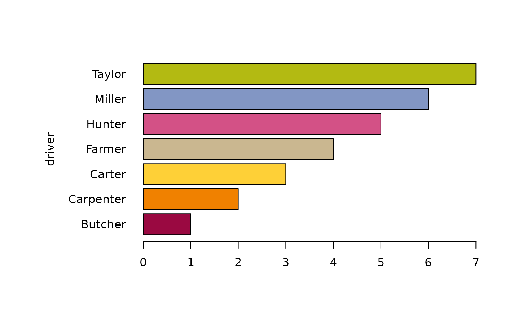

Mar.RdPlot margins are normally set by par("mar"). However one is forced to always define all margins, even if just one should be altered. The convenience function Mar() allows to set one single margin (or several) while leaving the others unchanged.
Mgp() does the same for the distances of axis title, labels and line.
Mar(bottom = NULL, left = NULL, top = NULL, right = NULL, outer = FALSE, reset = FALSE) Mgp(title = NULL, labels = NULL, line = NULL, reset = FALSE)
| bottom | the bottom margin, if set to |
|---|---|
| left | the left margin, if set to |
| top | the top margin, if set to |
| right | the right margin, if set to |
| outer | logical, defining if inner margins ( |
| reset | if set to |
| title | margin line for the axis title (default 3) |
| labels | margin line for the axis labels (default 1) |
| line | margin line for the axis line (default 0) |
Running Mar() without any arguments will return the current settings, either par("mar"), when outer is set to FALSE or par("oma") for outer = TRUE.
Andri Signorell <andri@signorell.net>
# largen the left margin only Mar(left=10.1) # or as alternative: Mar(, 10.1) Mgp(title=6) # ylab must be placed a little further to the left barplot(1:7, names=levels(d.pizza$driver), horiz=TRUE, las=1, ylab="driver", col=Pal("Helsana"))